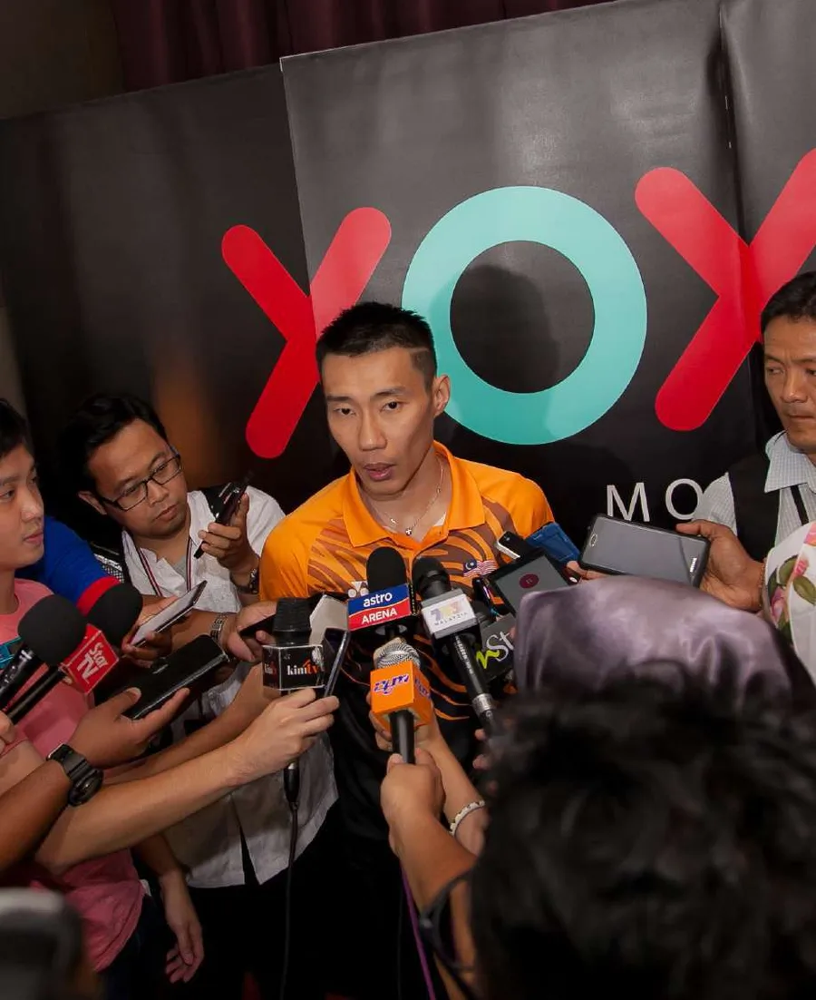

ABOUT | PRINS SOLUTION SDN BHD
An agency built on execution, since 2016.
PRINS Solution is a Malaysia-based marketing and event agency helping brands plan, produce and activate memorable experiences — from idea to execution.
Our story
PRINS Solution was established in Malaysia in 2016 with a simple goal: to help brands create better marketing and event experiences. We saw that many companies needed a reliable partner who could manage events from idea to execution while maintaining creativity, quality and smooth coordination.
We were inspired by the power of live experiences — how a well-planned event brings people together, strengthens brand connection and leaves a lasting impression. So we built a team that combines creative ideas, practical execution and strong attention to detail.
Our mission
We have one mission: to generate demand for your product or service. It is easy to find flashy support that lacks strategy, or a solid strategy weakened by mediocre creativity. A campaign that is not comprehensive will never generate the demand your business needs — and deserves. You deserve a firm that takes the time to learn about you, your industry, your customers and your company’s needs. That is what you can expect from PRINS.

The team
PRINS Solution is led by CK Shin, together with a team of creative, production and event operations professionals. We work closely with clients from concept to completion, ensuring every project is planned properly, executed smoothly and aligned with your brand, timeline and budget.
Track record
Since 2016, PRINS has planned and executed product launches, conferences, seminars, gala dinners, award ceremonies, exhibitions, roadshows, festive celebrations, internal engagements and brand activations across Malaysia.
We have supported corporate and brand clients including Lazada Malaysia (a continuous partner since 2020), TikTok Shop Malaysia (since 2022), Sony PlayStation (activations since 2017), Agoda Malaysia, Alibaba International, TNG eWallet, TIME dotCom, MRANTI, Vistra, AirAsia Group MOVE, Maxis and WeChat Pay Malaysia — plus government-linked programmes beginning with MaGIC (now MRANTI) in 2019.
We are built for corporate, brand and government-linked events with a defined budget and timeline. If you are planning a small private celebration, we are likely not the right match — and we would rather say so now.
Request a ProposalAbout PRINS — FAQs
Who is behind PRINS Solution?
PRINS Solution Sdn Bhd is led by founder CK Shin with an in-house team across creative, production and event operations. The company was established in Malaysia in 2016.
Which well-known clients has PRINS worked with?
Lazada Malaysia, Alibaba International, TikTok Shop, TNG eWallet, TIME dotCom, MRANTI, Vistra, AirAsia Group MOVE, Agoda Malaysia, Sony PlayStation, Maxis and WeChat Pay Malaysia, among other corporate clients.
Do you provide guarantees, support or after-sales service?
We provide continuous support throughout the project — planning, coordination, vendor follow-up, setup supervision and on-ground troubleshooting — and manage every confirmed scope against the agreed timeline. After the event, we support photo and video handover, post-event reporting, documentation and follow-up.
Is PRINS a full in-house team or do you use vendors?
We provide an integrated in-house service portfolio, supplemented by a network of trusted partners where a project requires it — always coordinated and quality-controlled by PRINS.